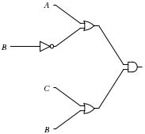

Computer Organization I
Useful Resources
Click on a topic below for a list of resources
RISC/MIPS
MIPS32 Reference Sheet
MIPS and SPIM Tutorial (University of Arizona)
MIPS Instruction Format Reference
MIPS Programming Guide
MIPS Comprehensive Reference Sheet (University of Massachusetts)
Translating C to MIPS Examples
MIPS Code Examples
MIPS Arrays and Bubble Sort Examples
MIPS Pipelining Intro (University of Iowa)
Assemblers, Linkers, and SPIM Tutorial (HP)
Procedure Call Explanation
Sample Procedure Call Assembly
MIPS Instruction Reference
Logic Design and Circuits
You'll need QtSpim and ModelSim-Altera for this class:
Practice Questions
Click on the questions below to reveal the answer
What is the CPU's (central processing unit) primary purpose?
Describe its two main components: the control unit and the datapath.
The CPU's primary purpose is executing machine instructions.
Control Unit: The control unit is a component of a computer's central processing unit (CPU) that directs operation of the processor. It tells the computer's memory, arithmetic/logic unit and input and output devices how to respond to a program's instructions.
Datapath: The datapath is a collection of functional units, such as arithmetic logic units or multipliers, that perform data processing operations.
What is the name for a program that translates code written in one programming language into another programming language?
A compiler.
They usually translate higher level languages into lower level languages, like C++ to MIPS assembly code.
[ Execution Time and Speedup ]
If the clock rate of a processor is 1.7GHz, what is its clock period?
Clock rate and clock period are inverses of one another. So we're converting cycles/seconds to seconds/cycle.
1/(1.7*109) = 588*10-12 = 588 ps
1. How is execution time defined?
2. If a program requires 10,000 instructions to execute, each instruction requires 2 cycles, and the clock rate is 2 GHz, what is the execution time?
1. Execution Time = instruction_count * CPI * clock period
2. 10,000 * 2 * (1/(2*109))
= 10,000 * 2 * 0.5/109
= 104/109
= 10-5 seconds
= 10 microseconds
1. How is speedup defined?
2. If a machine takes 20 seconds to execute a program, and it is improved so that the same program only takes 5 seconds to execute, what is the speedup for that machine?
1. Speedup = Told/Tnew
T represents the amount of time to execute some program.
2. 20/5 = 4 times faster
1. How is parallel speedup defined?
2. What is Amdahl's Law? How is it formulated?
3. Can we always decrease the execution time of a program by adding more processors to the task?
1. Parallel Speedup = T1/TP, where P is the number of processors.
2. Amdahl's Law states that the maximum speedup attainable by improvement in the execution of a program is limited by the fraction of the program that doesn't benefit from the improvement.
It is formulated as:
Speedup = Told/Tnew
Told/Tnew = 1/(Fractionunimproved + (Fractionimproved/Speedupimproved))
3. No. In terms of improvement from parallelization, Amdahl's Law states that speedup is limited by the sequential component of the program. So if a program executes in 3 hours, and 1 hour is spent executing sequential code, whereas the other 2 are spent executing code that can be parallelized, then we can't reduce the execution time of the program below 1 hour by adding more processors to the task.
[ Number Conversion ]
1. Convert 12310 to binary.
2. Convert 1001110011012 to decimal.
3. Convert 3458 to decimal.
4. Convert F1C416 to decimal.
5. Convert ABCD16 to binary.
1. 12310 can be converted to binary by repeated division by two and noting the remainder at each step:
123/2 = 61 R1
61/2 = 30 R1
30/2 = 15 R0
15/2 = 7 R1
7/2 = 3 R1
3/2 = 1 R1
1/2 = 0 R1
Then place the remainder of each division step, starting at the top, into a binary digit, starting at the least significant position. If we're using a Little Endian 8-bit representation and assuming byte addresses increase to the left, this would be:
0111 1011 = 12310
2. 1001110011012 to decimal:
20 = 1
22 = 4
23 = 8
26 = 64
27 = 128
28 = 256
211 = 2048
Add them together to get:
1001110011012 = 2509
3. 3458 = 3*82 + 4*81 + 5*80 = 229
4. F1C416 = 15*163 + 1*162 + 12*161 + 4*160 = 6189210.
5. To convert ABCD16 to binary note that 4 bits are required to represent each hex digit:
ABCD16 = 1010 1011 1100 1101
[ Signed Binary Representations ]
1. Why use two's complement instead of just using a sign bit?
2. Why is it called "two's complement"?
1. Basically, it simplifies the work the hardware has to do when handling operations involving signed integers.
For an example of this, consider using a simple binary magnitude representation:
Then an operation like 4+(-2) in binary would yield:
0100 + 1010 = 1110 = -6
So the hardware would actually have to check for signed integers and handle them in a different way.
However, using the two's complement version of -2 we get:
0100 + 1110 = 0010 = 2
which is what we expect for 4+(-2).
Also, consider that extending an integer in binary to fill more bits is easier using two's complement, since we merely extend the sign bit to fill the new bit locations, whereas using binary magnitude representation would have required that only the left-most bit match the sign bit.
2. It is called “two’s complement” because to negate an integer, you subtract it from 2N. It's actually a radix complement where the radix is 2.
For example, to get -2 in two's complement using 4 bits:
24 - 2 = 14 = 1110 = -2 in two's complement
Note: The radix is the number of unique digits, including zero, used to represent numbers in a positional numeral system.
1. Represent -3 using signed binary magnitude representation (8 bits)
2. Represent -3 using one's complement binary number representation (8 bits)
3. Represent -3 using two's complement binary number representation (8 bits)
3 = 0000 0011
1. Set the sign bit to get:
-3 = 1000 0011
2. Take the complement of the number (i.e., flip all the bits) to get:
-3 = 1111 1100
3. To get the two's complement, add 1 to the one's complement:
-3 = 1111 1100 + 1 = 1111 1101
Your system uses two's complement binary representation.
After the following two complement operations, what values will x and y hold?
int x = 2;
unsigned int y = 2;
x = ~2;
y = ~2;
x = 2 = 0000 0010
x = ~2 = 1111 1101 = -3 (in two's complement)
y = 2 = 0000 0010
y = ~2 = 1111 1101 = 253 since y is unsigned
[ Binary Arithmetic ]
Add the following binary numbers together: 1011, 1001, 0110.
In two steps:
1011
+1001
-----
10100
10100
+0110
-----
11010
Alternatively, you could just add them all together at the same time. Just remember to carry a 1 for each pair of 1's in a column. If there's an odd number of 1's, there should be a 1 placed in that column as well.
For example, in binary: 1 + 1 + 1 = 11
Subtract these two binary numbers: 10101 - 1110
10101
-1110
-----
0111
Remember, when subtracting 1 from 0, you borrow a 1 from the next column. Also, note that, when borrowing, the subtraction will result in a 1.
For example, in binary: 10 - 1 = 1
This makes sense, since you're borrowing twice the amount the current column represents from the next column. This is because shifting left by one in binary is the same as doubling. After the subtraction, you're left with half the value, which is what the current column represents.
Basically, remember that when borrowing: 0 - 1 = 1.
Multiply the binary bumbers: 1011 * 11
1011
*101
----
1011
0000
1011
------
110111
Divide the binary numbers: 1010 / 10
101 10|1010 10 010 10 0
[ IEEE-754 Floating Point Representation ]
For single precision IEEE-754 floating point numbers, what do the bit fields represent and how many bits compose each field?
---------------------------------------------------
| sign | exponent | mantissa |
---------------------------------------------------
1 bit 8 bits 23 bits
How is the value of a IEEE-754 floating point number computed?
Computed as: sign * 2exponent * mantissa
What is the exponent offset by and why?
The offset of the exponent field is +127. This is to allow for the representation of negative exponents.
For example, if the exponent field contains 100001010, then the exponent is actually:
100010102 = 13710
137 - 127 = 1010
So the number would be computed as: sign * 210 * mantissa.
Convert the following single precision floating point number represented by the hexadecimal number 0xC0EB0000 to its equivalent decimal number.
First, convert 0xC0EB0000 to binary:
1100 0000 1110 1011 0000 0000 0000 0000
We know that the IEEE floating point representation uses 1 bit to indicate sign, 8 bits for the exponent, and 23 bits for the mantissa:
1 10000001 11010110000000000000000
We convert this to decimal by interpreting each field:
- The sign is negative since the sign field is 1.
- The exponent for the binary scientific notation is 2.
- Remember, the exponent field is offset by 127 to accomodate negative values. Since 10000001 = 129 and 129 - 127 = 2, the exponent will be 2.
- We append the mantissa to 1, which is implied in the notation.
Then the final result is:
-1.1101011 * 22
= -(20+2-1+2-2+2-4+2-6+2-7)*22
= -(22+21+20+2-2+2-4+2-5)
= -(7+0.34375)
= -7.34375
Convert -8.625 to single precision IEEE-754 floating point number representation.
First, convert 8.625 to binary:
8 = 1000
Convert 0.625:
0.625 * 2 = 1.25
0.25 * 2 = 0.50
0.50 * 2 = 1.0
Use the whole number part of each result after multiplying by 2:
0.101 = 0.625
Then 8.625 in binary is:
1000.101
Convert this number into the mantissa and exponent:
1000.101 = 1.000101 * 23
The mantissa is 23 bits long, so we add 17 0's onto the end of the fractional part of 1.000101:
mantissa = 00010100000000000000000
The exponent is 8 bits long and is offset by +127.
So we must add 127 to 3 and that's the number we'll put in the exponent field:
130 = 10000010
We set the sign bit to 1, since the number is negative.
So, our final result is:
1 10000010 00010100000000000000000
[ MIPS/RISC ]
What are the names of the three main components of the MIPS
data path?
(Note: data and instruction memory do not belong to the datapath.)
Program Counter
Register File
Arithmetic-Logic Unit (ALU)
What are the three classes of MIPS instructions? Describe each.
* ALU instructions *
- These instructions take either two registers or a register and a sign-extended immediate (called ALU immediate instructions, they have a 16-bit offset in MIPS), operate on them, and store the result into a third register.
* Loads and Stores *
- These instructions store data from a register to memory, or load data from memory into a register.
- They both take a register source, called the base register, and an immediate field (16-bit in MIPS), called the offset, as operands.
- The sum (called the effective address) of the contents of the base register and the sign-extended offset is used as a memory address.
* Branches and Jumps *
- Branches are conditional transfers of control.
- Jumps are unconditional transfers of control.
- In all RISC architectures, the branch destination is obtained by adding a sign-extended offset (16 bits in MIPS) to the current PC.
What do the fields in an R-type MIPS assembly instruction (like
add $rd, $rs, $rt) represent?
How many bits compose each field?
Draw a diagram and label each field with its name and the field width as a range of bits.
----------------------------------------------
| op | rs | rt | rd | shamnt | funct |
----------------------------------------------
31-26 25-21 20-16 15-11 10-6 5-0
Convert the R-type instruction add $5, $6, $7 to its binary machine instruction format.
----------------------------------------------
| op | rs | rt | rd | shamnt | funct |
----------------------------------------------
31-26 25-21 20-16 15-11 10-6 5-0
The opcode for an ALU operation is 0 in 6 bits: 000000
The three operand fields will be filled by:
rs: 6 = 00110
rt: 7 = 00111
rd: 5 = 00101
The shift amount is 0 in 5 bits: 00000
The funct field for an add is 32: 100000
So altogether the instruction in MIPS binary is:
000000 00110 00111 00101 00000 100000
The size (or capacity) of a memory unit can be expressed in words, bytes, or bits. Express the size (capacity) of the MIPS Register File in all three of them: words, bytes, and bits.
32 words, 128 bytes, 1024 bits.
Assume a multicycle pipelined datapath has steps that take the amount of time specified below.
IF - 305 ps
ID - 275 ps
EX - 280 ps
MEM - 305 ps
WB - 250 ps
1. Given the times for the datapath stages listed above, what would the clock period be for the
entire datapath?
2. In a pipelined datapath, assuming no hazards or stalls, how many seconds will it take to execute 1 instruction?
1. The clock period is defined by the longest stage: 305 ps in the IF stage.
The clock rate is the inverse of the period: 1/(3.05*10-10) = 3.28 GHz.
2. 1 instruction would need to proceed through all 5 stages of the pipeline:
305 ps x 5 stages = 1,525 ps or 1.525 x 10-9 s.
Write a sequence of MIPS instructions that directly
correspond to this C code segment. Assume register $s0 contains the
integer variable x and register $s1 contains the integer variable m. Use
temporary registers if necessary. To alter the order of execution of
instructions in your MIPS code, do not use jump (j) instructions, but
only branch (beq and bne) instruction.
if (x < 15)
x = x + m;
else
x = x – m;
x++;
slti $t0, $s0, 15
beq $t0, $zero, else
add $s0, $s0, $s1
beq $zero, $zero, exit
else: sub $s0, $s0, $s1
exit: addi $s0, $s0, 1
[ Hamming Codes ]
Convert 7 to the equivalent Hamming (7,4) 7-bit code word.
7 in binary is 0111.
We need parity bits for each position that is a power of two:
_ _ 0 _ 1 1 1
Each parity bit calculates the parity for some of the bits in the code word.
The position of the parity bit determines the sequence of bits that it alternately checks and skips:
Position 1: check 1 bit, skip 1 bit, check 1 bit, skip 1 bit, etc.
(1,3,5,7,9,11,13,15,...)
Position 2: check 2 bits, skip 2 bits, check 2 bits, skip 2 bits, etc.
(2,3,6,7,10,11,14,15,...)
Position 4: check 4 bits, skip 4 bits, check 4 bits, skip 4 bits, etc.
(4,5,6,7,12,13,14,15,20,21,22,23,...)
Position 8: check 8 bits, skip 8 bits, check 8 bits, skip 8 bits, etc.
(8-15,24-31,40-47,...)
For example, the check for bit position 4 would yield: 1 + 1 + 1 = 3
Since 3 is odd, we must add 1 to make it even, so we put a 1 in position 4:
_ _ 0 1 1 1 1
Proceeding in like fashion according to the above rules for bit checking we get the following Hamming code:
0 0 0 1 1 1 1
Determine which bit is in error in this Hamming code: 0011111
Let's check the parity bit sums:
P1: 0 + 1 + 1 + 1 = 3
P2: 0 + 1 + 1 + 1 = 3
P4: 1 + 1 + 1 + 1 = 4
Positions 1 and 2 are not even.
We add the positions together to find the bit in error: 1 + 2 = 3
So, if we invert the bit in position 3 we will have a valid code word:
0001111
[ Logic Design and Circuits ]
What is the basic difference between combinational and sequential logic?
The output of a combinational logic circuit depends solely on its inputs. It has no memory.
The output of a sequential logic circuit depends on inputs and the current
state. It has memory.
The 1-bit adder is a combinational logic block that has three inputs and two outputs. What are they?
The three inputs are: the first operand bit, the second operand bit,
and the carry-in.
The two outputs are: carry-out and sum.
Convert the following circuit diagram to the Boolean expression it represents.

Start at the leftmost input and combine them as you read the circuit from left to right.
We first have an input of B which enters a NOT gate, giving us: ~B
We then OR this with A, giving us: A + ~B
Next we have B and C at the bottom of the circuit. They both enter an OR gate giving us: C + B
Finally, the inputs from the two OR gates enter an AND gate, giving us the expression that represents the circuit:
(A + ~B)(C + B)
Simplify the Boolean expression:
~(AB)(~A+B)(~B+B)
~(AB)(~A + B)1 Complement Law
~(AB)(~A + B) Identity Law
(~A + ~B)(~A + B) DeMorgan's Law
~A + (~BB) Distributive Law
~A1 Complement Law
~A Identity Law